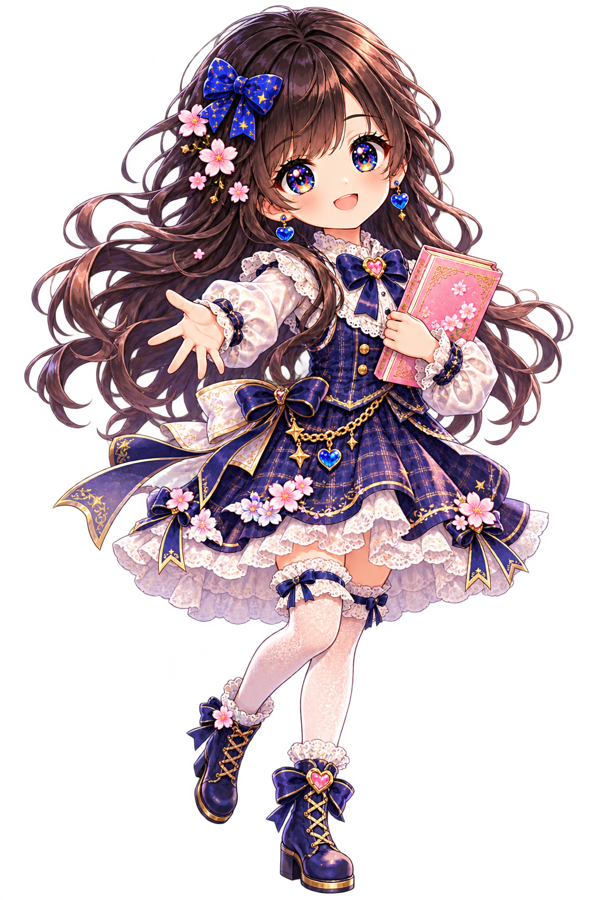

A LITTLE ACTION RPG🌸 咲華と失われた詩

SAKIHANA'S LITTLE ADVENTURE
咲華と
失われた詩
桜の町から、ことばを探す旅へ。
あなたの想いが、世界を照らす。
開始後に音が出る場合があります。右上の音設定で調整できます。
進行はこのブラウザに自動保存されます。APK・別の端末とは同期しません。サイトデータの削除やプライベート閲覧で失われる場合があります。起動・再読込には通信が必要です。

桜の町から、ことばを探す旅へ。
あなたの想いが、世界を照らす。
開始後に音が出る場合があります。右上の音設定で調整できます。
進行はこのブラウザに自動保存されます。APK・別の端末とは同期しません。サイトデータの削除やプライベート閲覧で失われる場合があります。起動・再読込には通信が必要です。